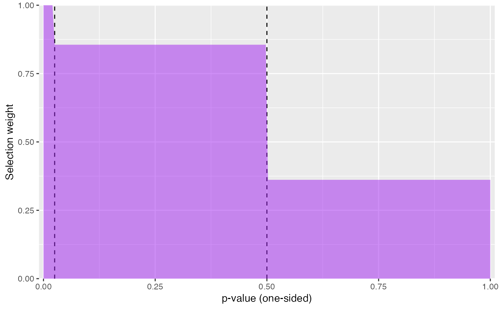

Plot the selection weights implied by an estimated selection model.
Source:R/selection_plot.R
selection_plot.RdFor a fitted model of class "selmodel", create a plot of
the selection weights implied by the model parameter estimates. If the
model includes bootstrapped confidence intervals, then the plot will also
display the selection weights implied by each bootstrap replicate of the
parameter estimates.
Usage
selection_plot(mod, pts = 200L, ...)
# S3 method for class 'selmodel'
selection_plot(
mod,
pts = 200L,
fill = "blue",
alpha = 0.5,
step_linetype = "dashed",
...
)
# S3 method for class 'boot.selmodel'
selection_plot(
mod,
pts = 200L,
color = "black",
linewidth = 1.2,
step_linetype = "dashed",
draw_boots = TRUE,
boot_color = "blue",
boot_alpha = 0.1,
...
)Arguments
- mod
Fitted model of class
"selmodel".- pts
Number of points for which to calculate selection weights, with a default of 200 points, evenly spaced between 0 and 1.
- ...
further arguments passed to some methods.
- fill
character string specifying the fill-color to use when
moddoes not include bootstrap replications, with a default of"blue". Passed toggplot2::geom_area().- alpha
numeric value specifying the opacity of the filled area plot, with a default of 0.5. Passed to
ggplot2::geom_area(). Only used whenmoddoes not include bootstrap replications.- step_linetype
character string specifying the type of line to draw to indicate p-value thresholds assumed in
mod.- color
character string specifying the line color to use for drawing the estimated selection weights, with a default of
"black". Passed toggplot2::geom_line(). Only used whenmodincludes bootstrap replications.- linewidth
numeric value specifying the line width to use for drawing the estimated selection weights, with a default of 1.2. Passed to
ggplot2::geom_line(). Only used whenmodincludes bootstrap replications.- draw_boots
logical value indicating whether to draw the selection weights for each bootstrap replication, with a default of
TRUE.- boot_color
character string specifying the line color to use for drawing the selection weights of each bootstrap replication, with a default of
"blue". Passed toggplot2::geom_line(). Only used whenmodincludes bootstrap replications.- boot_alpha
numeric value specifying the opacity of the lines for drawing the selection weights of each bootstrap replication, with a default of
"blue". Passed toggplot2::geom_line(). Only used whenmodincludes bootstrap replications.
Examples
mod <- selection_model(
data = self_control,
yi = g,
sei = se_g,
cluster = studyid,
steps = c(0.025, .5),
estimator = "ML",
bootstrap = "none"
)
selection_plot(mod, fill = "purple")

mod_boot <- selection_model(
data = self_control,
yi = g,
sei = se_g,
cluster = studyid,
steps = c(0.025, .5),
estimator = "ML",
bootstrap = "multinomial",
CI_type = "percentile",
R = 9
)
selection_plot(mod_boot)

selection_plot(mod_boot, draw_boots = FALSE) # turn off bootstrap lines

selection_plot(mod_boot, color = "red", boot_color = "orange") # change colors
